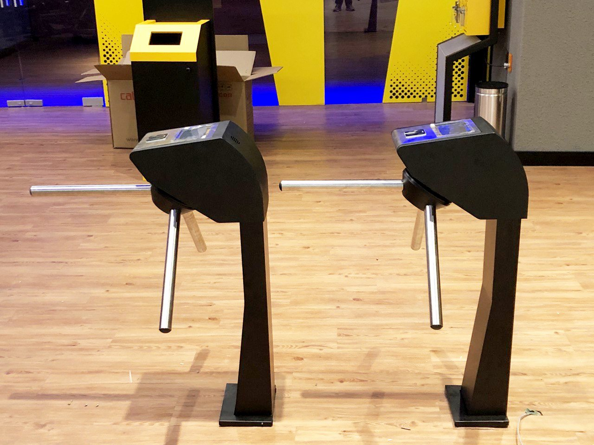
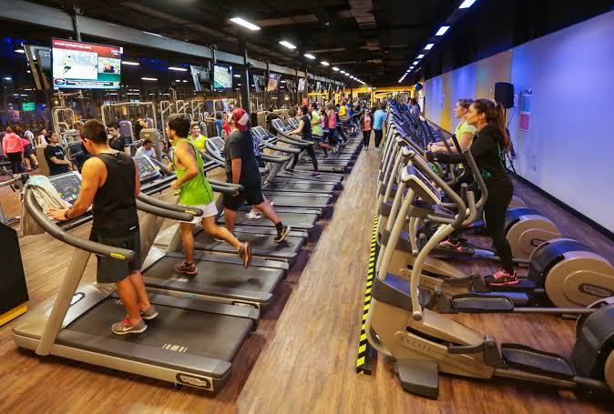

Descubre cómo nuestro sistema ayuda a mejorar la experiencia en los gimnasios Smart Fit optimizando la distribución de usuarios.
Smart Fit es una cadena de gimnasios con alta demanda. En ciudades como Pachuca, las sucursales suelen estar saturadas, lo que afecta la experiencia de los usuarios.
Sobre Nosotros
Somos un equipo de innovación tecnológica que busca mejorar la experiencia en los gimnasios mediante soluciones digitales.
Hemos identificado una oportunidad para optimizar la distribución de usuarios en Smart Fit a través del monitoreo en tiempo real.
Funcionamiento del Sistema
El sistema consta de los siguientes componentes:
Torniquetes inteligentes para registrar la entrada y salida de usuarios.
Base de datos en la nube que almacena la información en tiempo real.
Aplicación móvil que permite a los usuarios visualizar la ocupación en cada sucursal.
Capacitación del personal para gestionar el sistema de forma eficiente.

Datos y Estadísticas
Datos recopilados sobre la afluencia en los gimnasios:
En México, Smart Fit cuenta con más de 200,000 usuarios activos.
Se estima que cada gimnasio recibe en promedio 667 personas al día.
El horario de operación es de 6:00 a 23:00 hrs, con un promedio de 40 personas ingresando por hora.
Algunas sucursales tienen mayor afluencia que otras, lo que provoca saturación.

Contacto y Feedback
Si tienes dudas o sugerencias, por favor contáctanos a través del siguiente formulario: